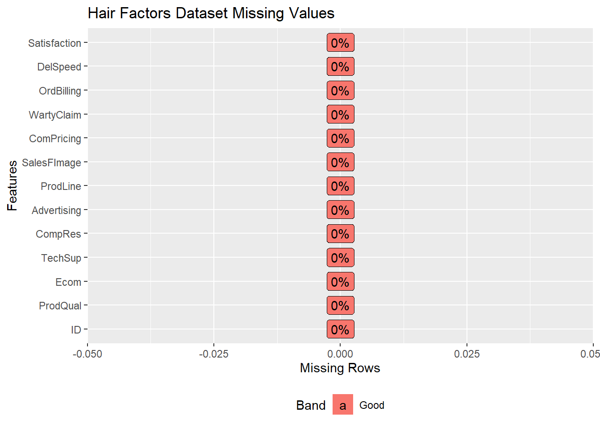
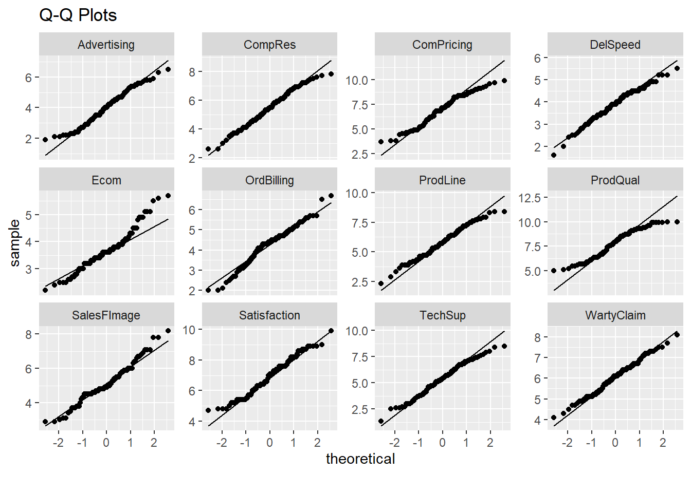
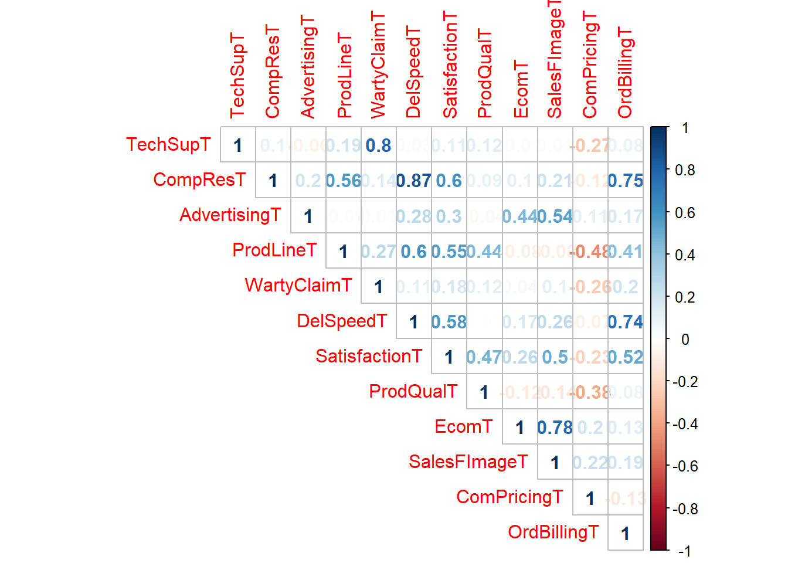

PCA and Regression Combination
Load required libraries
library(DataExplorer)
library(dplyr)
library(formattable)
library(packHV)
library(corrplot)
library(car)
library(nFactors)
library(pastecs)
library(psych)
library(bestNormalize)Load data from working directory
hairData = read.csv("Factor-Hair-Revised.csv", header = TRUE)Understanding the data
head(hairData)## ID ProdQual Ecom TechSup CompRes Advertising ProdLine SalesFImage
## 1 1 8.5 3.9 2.5 5.9 4.8 4.9 6.0
## 2 2 8.2 2.7 5.1 7.2 3.4 7.9 3.1
## 3 3 9.2 3.4 5.6 5.6 5.4 7.4 5.8
## 4 4 6.4 3.3 7.0 3.7 4.7 4.7 4.5
## 5 5 9.0 3.4 5.2 4.6 2.2 6.0 4.5
## 6 6 6.5 2.8 3.1 4.1 4.0 4.3 3.7
## ComPricing WartyClaim OrdBilling DelSpeed Satisfaction
## 1 6.8 4.7 5.0 3.7 8.2
## 2 5.3 5.5 3.9 4.9 5.7
## 3 4.5 6.2 5.4 4.5 8.9
## 4 8.8 7.0 4.3 3.0 4.8
## 5 6.8 6.1 4.5 3.5 7.1
## 6 8.5 5.1 3.6 3.3 4.7tail(hairData)## ID ProdQual Ecom TechSup CompRes Advertising ProdLine SalesFImage
## 95 95 9.3 3.8 4.0 4.6 4.7 6.4 5.5
## 96 96 8.6 4.8 5.6 5.3 2.3 6.0 5.7
## 97 97 7.4 3.4 2.6 5.0 4.1 4.4 4.8
## 98 98 8.7 3.2 3.3 3.2 3.1 6.1 2.9
## 99 99 7.8 4.9 5.8 5.3 5.2 5.3 7.1
## 100 100 7.9 3.0 4.4 5.1 5.9 4.2 4.8
## ComPricing WartyClaim OrdBilling DelSpeed Satisfaction
## 95 7.4 5.3 3.6 3.4 7.7
## 96 6.7 5.8 4.9 3.6 7.3
## 97 7.2 4.5 4.2 3.7 6.3
## 98 5.6 5.0 3.1 2.5 5.4
## 99 7.9 6.0 4.3 3.9 6.4
## 100 9.7 5.7 3.4 3.5 6.4str(hairData)## 'data.frame': 100 obs. of 13 variables:
## $ ID : int 1 2 3 4 5 6 7 8 9 10 ...
## $ ProdQual : num 8.5 8.2 9.2 6.4 9 6.5 6.9 6.2 5.8 6.4 ...
## $ Ecom : num 3.9 2.7 3.4 3.3 3.4 2.8 3.7 3.3 3.6 4.5 ...
## $ TechSup : num 2.5 5.1 5.6 7 5.2 3.1 5 3.9 5.1 5.1 ...
## $ CompRes : num 5.9 7.2 5.6 3.7 4.6 4.1 2.6 4.8 6.7 6.1 ...
## $ Advertising : num 4.8 3.4 5.4 4.7 2.2 4 2.1 4.6 3.7 4.7 ...
## $ ProdLine : num 4.9 7.9 7.4 4.7 6 4.3 2.3 3.6 5.9 5.7 ...
## $ SalesFImage : num 6 3.1 5.8 4.5 4.5 3.7 5.4 5.1 5.8 5.7 ...
## $ ComPricing : num 6.8 5.3 4.5 8.8 6.8 8.5 8.9 6.9 9.3 8.4 ...
## $ WartyClaim : num 4.7 5.5 6.2 7 6.1 5.1 4.8 5.4 5.9 5.4 ...
## $ OrdBilling : num 5 3.9 5.4 4.3 4.5 3.6 2.1 4.3 4.4 4.1 ...
## $ DelSpeed : num 3.7 4.9 4.5 3 3.5 3.3 2 3.7 4.6 4.4 ...
## $ Satisfaction: num 8.2 5.7 8.9 4.8 7.1 4.7 5.7 6.3 7 5.5 ...summary(hairData)## ID ProdQual Ecom TechSup
## Min. : 1.00 Min. : 5.000 Min. :2.200 Min. :1.300
## 1st Qu.: 25.75 1st Qu.: 6.575 1st Qu.:3.275 1st Qu.:4.250
## Median : 50.50 Median : 8.000 Median :3.600 Median :5.400
## Mean : 50.50 Mean : 7.810 Mean :3.672 Mean :5.365
## 3rd Qu.: 75.25 3rd Qu.: 9.100 3rd Qu.:3.925 3rd Qu.:6.625
## Max. :100.00 Max. :10.000 Max. :5.700 Max. :8.500
## CompRes Advertising ProdLine SalesFImage
## Min. :2.600 Min. :1.900 Min. :2.300 Min. :2.900
## 1st Qu.:4.600 1st Qu.:3.175 1st Qu.:4.700 1st Qu.:4.500
## Median :5.450 Median :4.000 Median :5.750 Median :4.900
## Mean :5.442 Mean :4.010 Mean :5.805 Mean :5.123
## 3rd Qu.:6.325 3rd Qu.:4.800 3rd Qu.:6.800 3rd Qu.:5.800
## Max. :7.800 Max. :6.500 Max. :8.400 Max. :8.200
## ComPricing WartyClaim OrdBilling DelSpeed
## Min. :3.700 Min. :4.100 Min. :2.000 Min. :1.600
## 1st Qu.:5.875 1st Qu.:5.400 1st Qu.:3.700 1st Qu.:3.400
## Median :7.100 Median :6.100 Median :4.400 Median :3.900
## Mean :6.974 Mean :6.043 Mean :4.278 Mean :3.886
## 3rd Qu.:8.400 3rd Qu.:6.600 3rd Qu.:4.800 3rd Qu.:4.425
## Max. :9.900 Max. :8.100 Max. :6.700 Max. :5.500
## Satisfaction
## Min. :4.700
## 1st Qu.:6.000
## Median :7.050
## Mean :6.918
## 3rd Qu.:7.625
## Max. :9.900plot_str(hairData, fontSize = 40)
plot_intro(hairData, title = "Hair Factors Dataset Structure")plot_missing(hairData, title = "Hair Factors Dataset Missing Values")
Setting variables names and removing ID column
expandVar = c("Product Quality", "E-Commerce","Technical Support","Complaint Resolution",
"Advertising", "Product Line","Salesforce Image","Competitive Pricing",
"Warranty & Claims", "Order & Billing", "Delivery Speed","Customer Satisfaction")
varNames = cbind(names(hairData), expandVar)## Warning in cbind(names(hairData), expandVar): number of rows of result is
## not a multiple of vector length (arg 2)colnames(varNames) = c("Variable", "Expanded Name")
formattable(as.data.frame(varNames), align = 'l')| Variable | Expanded Name |
|---|---|
| ID | Product Quality |
| ProdQual | E-Commerce |
| Ecom | Technical Support |
| TechSup | Complaint Resolution |
| CompRes | Advertising |
| Advertising | Product Line |
| ProdLine | Salesforce Image |
| SalesFImage | Competitive Pricing |
| ComPricing | Warranty & Claims |
| WartyClaim | Order & Billing |
| OrdBilling | Delivery Speed |
| DelSpeed | Customer Satisfaction |
| Satisfaction | Product Quality |
hairData = subset(hairData, select = -c(ID))Variable statistics
formattable(stat.desc(hairData), digits=2)| ProdQual | Ecom | TechSup | CompRes | Advertising | ProdLine | SalesFImage | ComPricing | WartyClaim | OrdBilling | DelSpeed | Satisfaction | |
|---|---|---|---|---|---|---|---|---|---|---|---|---|
| nbr.val | 100.00 | 100.00 | 100.00 | 100.00 | 100.00 | 100.00 | 100.00 | 100.00 | 100.000 | 100.000 | 100.000 | 100.00 |
| nbr.null | 0.00 | 0.00 | 0.00 | 0.00 | 0.00 | 0.00 | 0.00 | 0.00 | 0.000 | 0.000 | 0.000 | 0.00 |
| nbr.na | 0.00 | 0.00 | 0.00 | 0.00 | 0.00 | 0.00 | 0.00 | 0.00 | 0.000 | 0.000 | 0.000 | 0.00 |
| min | 5.00 | 2.20 | 1.30 | 2.60 | 1.90 | 2.30 | 2.90 | 3.70 | 4.100 | 2.000 | 1.600 | 4.70 |
| max | 10.00 | 5.70 | 8.50 | 7.80 | 6.50 | 8.40 | 8.20 | 9.90 | 8.100 | 6.700 | 5.500 | 9.90 |
| range | 5.00 | 3.50 | 7.20 | 5.20 | 4.60 | 6.10 | 5.30 | 6.20 | 4.000 | 4.700 | 3.900 | 5.20 |
| sum | 781.00 | 367.20 | 536.50 | 544.20 | 401.00 | 580.50 | 512.30 | 697.40 | 604.300 | 427.800 | 388.600 | 691.80 |
| median | 8.00 | 3.60 | 5.40 | 5.45 | 4.00 | 5.75 | 4.90 | 7.10 | 6.100 | 4.400 | 3.900 | 7.05 |
| mean | 7.81 | 3.67 | 5.37 | 5.44 | 4.01 | 5.80 | 5.12 | 6.97 | 6.043 | 4.278 | 3.886 | 6.92 |
| SE.mean | 0.14 | 0.07 | 0.15 | 0.12 | 0.11 | 0.13 | 0.11 | 0.15 | 0.082 | 0.093 | 0.073 | 0.12 |
| CI.mean.0.95 | 0.28 | 0.14 | 0.30 | 0.24 | 0.22 | 0.26 | 0.21 | 0.31 | 0.163 | 0.184 | 0.146 | 0.24 |
| var | 1.95 | 0.49 | 2.34 | 1.46 | 1.27 | 1.73 | 1.15 | 2.39 | 0.672 | 0.863 | 0.539 | 1.42 |
| std.dev | 1.40 | 0.70 | 1.53 | 1.21 | 1.13 | 1.32 | 1.07 | 1.55 | 0.820 | 0.929 | 0.734 | 1.19 |
| coef.var | 0.18 | 0.19 | 0.29 | 0.22 | 0.28 | 0.23 | 0.21 | 0.22 | 0.136 | 0.217 | 0.189 | 0.17 |
Attaching file
attach(hairData)## The following objects are masked from hairData (pos = 3):
##
## Advertising, CompRes, ComPricing, DelSpeed, Ecom, OrdBilling,
## ProdLine, ProdQual, SalesFImage, Satisfaction, TechSup,
## WartyClaim## The following objects are masked from hairData (pos = 4):
##
## Advertising, CompRes, ComPricing, DelSpeed, Ecom, OrdBilling,
## ProdLine, ProdQual, SalesFImage, Satisfaction, TechSup,
## WartyClaimPlot histograms, density and box plots
par(mfrow = c(3,4))
for (i in 1:12){
r = hairData[,i]
hist_boxplot(r, freq = FALSE, density = TRUE, main = colnames(hairData[i]), xlab = "Score")
}
dev.off()## null device
## 1Checking for normality - Q-Q Plots
plot_qq(hairData, ncol = 4, nrow = 3, title = "Q-Q Plots")
Correlation matrix
corrplot::corrplot(cor(hairData), method = "number", type = "upper")Checking for Multicollinearity using the Value Inflation Fatcor
modelHairData = lm(Satisfaction ~ ProdQual+Ecom+TechSup+CompRes+Advertising+ProdLine+SalesFImage+ComPricing+WartyClaim+OrdBilling+DelSpeed,
data = hairData)
VIF_Value = vif(modelHairData)
formattable(as.data.frame(VIF_Value))| VIF_Value | |
|---|---|
| ProdQual | 1.635797 |
| Ecom | 2.756694 |
| TechSup | 2.976796 |
| CompRes | 4.730448 |
| Advertising | 1.508933 |
| ProdLine | 3.488185 |
| SalesFImage | 3.439420 |
| ComPricing | 1.635000 |
| WartyClaim | 3.198337 |
| OrdBilling | 2.902999 |
| DelSpeed | 6.516014 |
Build Regression model
regHairData = summary(modelHairData)
regHairData##
## Call:
## lm(formula = Satisfaction ~ ProdQual + Ecom + TechSup + CompRes +
## Advertising + ProdLine + SalesFImage + ComPricing + WartyClaim +
## OrdBilling + DelSpeed, data = hairData)
##
## Residuals:
## Min 1Q Median 3Q Max
## -1.43005 -0.31165 0.07621 0.37190 0.90120
##
## Coefficients:
## Estimate Std. Error t value Pr(>|t|)
## (Intercept) -0.66961 0.81233 -0.824 0.41199
## ProdQual 0.37137 0.05177 7.173 2.18e-10 ***
## Ecom -0.44056 0.13396 -3.289 0.00145 **
## TechSup 0.03299 0.06372 0.518 0.60591
## CompRes 0.16703 0.10173 1.642 0.10416
## Advertising -0.02602 0.06161 -0.422 0.67382
## ProdLine 0.14034 0.08025 1.749 0.08384 .
## SalesFImage 0.80611 0.09775 8.247 1.45e-12 ***
## ComPricing -0.03853 0.04677 -0.824 0.41235
## WartyClaim -0.10298 0.12330 -0.835 0.40587
## OrdBilling 0.14635 0.10367 1.412 0.16160
## DelSpeed 0.16570 0.19644 0.844 0.40124
## ---
## Signif. codes: 0 '***' 0.001 '**' 0.01 '*' 0.05 '.' 0.1 ' ' 1
##
## Residual standard error: 0.5623 on 88 degrees of freedom
## Multiple R-squared: 0.8021, Adjusted R-squared: 0.7774
## F-statistic: 32.43 on 11 and 88 DF, p-value: < 2.2e-16Shapiro-Wilks Test for normality
hairLapply = lapply(hairData, shapiro.test)
str(hairLapply)## List of 12
## $ ProdQual :List of 4
## ..$ statistic: Named num 0.95
## .. ..- attr(*, "names")= chr "W"
## ..$ p.value : num 0.000795
## ..$ method : chr "Shapiro-Wilk normality test"
## ..$ data.name: chr "X[[i]]"
## ..- attr(*, "class")= chr "htest"
## $ Ecom :List of 4
## ..$ statistic: Named num 0.959
## .. ..- attr(*, "names")= chr "W"
## ..$ p.value : num 0.00316
## ..$ method : chr "Shapiro-Wilk normality test"
## ..$ data.name: chr "X[[i]]"
## ..- attr(*, "class")= chr "htest"
## $ TechSup :List of 4
## ..$ statistic: Named num 0.986
## .. ..- attr(*, "names")= chr "W"
## ..$ p.value : num 0.39
## ..$ method : chr "Shapiro-Wilk normality test"
## ..$ data.name: chr "X[[i]]"
## ..- attr(*, "class")= chr "htest"
## $ CompRes :List of 4
## ..$ statistic: Named num 0.986
## .. ..- attr(*, "names")= chr "W"
## ..$ p.value : num 0.402
## ..$ method : chr "Shapiro-Wilk normality test"
## ..$ data.name: chr "X[[i]]"
## ..- attr(*, "class")= chr "htest"
## $ Advertising :List of 4
## ..$ statistic: Named num 0.976
## .. ..- attr(*, "names")= chr "W"
## ..$ p.value : num 0.0677
## ..$ method : chr "Shapiro-Wilk normality test"
## ..$ data.name: chr "X[[i]]"
## ..- attr(*, "class")= chr "htest"
## $ ProdLine :List of 4
## ..$ statistic: Named num 0.987
## .. ..- attr(*, "names")= chr "W"
## ..$ p.value : num 0.432
## ..$ method : chr "Shapiro-Wilk normality test"
## ..$ data.name: chr "X[[i]]"
## ..- attr(*, "class")= chr "htest"
## $ SalesFImage :List of 4
## ..$ statistic: Named num 0.974
## .. ..- attr(*, "names")= chr "W"
## ..$ p.value : num 0.0453
## ..$ method : chr "Shapiro-Wilk normality test"
## ..$ data.name: chr "X[[i]]"
## ..- attr(*, "class")= chr "htest"
## $ ComPricing :List of 4
## ..$ statistic: Named num 0.968
## .. ..- attr(*, "names")= chr "W"
## ..$ p.value : num 0.0145
## ..$ method : chr "Shapiro-Wilk normality test"
## ..$ data.name: chr "X[[i]]"
## ..- attr(*, "class")= chr "htest"
## $ WartyClaim :List of 4
## ..$ statistic: Named num 0.991
## .. ..- attr(*, "names")= chr "W"
## ..$ p.value : num 0.74
## ..$ method : chr "Shapiro-Wilk normality test"
## ..$ data.name: chr "X[[i]]"
## ..- attr(*, "class")= chr "htest"
## $ OrdBilling :List of 4
## ..$ statistic: Named num 0.974
## .. ..- attr(*, "names")= chr "W"
## ..$ p.value : num 0.0455
## ..$ method : chr "Shapiro-Wilk normality test"
## ..$ data.name: chr "X[[i]]"
## ..- attr(*, "class")= chr "htest"
## $ DelSpeed :List of 4
## ..$ statistic: Named num 0.982
## .. ..- attr(*, "names")= chr "W"
## ..$ p.value : num 0.177
## ..$ method : chr "Shapiro-Wilk normality test"
## ..$ data.name: chr "X[[i]]"
## ..- attr(*, "class")= chr "htest"
## $ Satisfaction:List of 4
## ..$ statistic: Named num 0.975
## .. ..- attr(*, "names")= chr "W"
## ..$ p.value : num 0.0556
## ..$ method : chr "Shapiro-Wilk normality test"
## ..$ data.name: chr "X[[i]]"
## ..- attr(*, "class")= chr "htest"hairSapply = sapply(hairLapply, '[', c("statistic","p.value"))
hairShapiro = t(hairSapply)
hairShapiro = as.data.frame(hairShapiro)
formattable(hairShapiro, digits = 4)| statistic | p.value | |
|---|---|---|
| ProdQual | 0.9497 | 0.0007953 |
| Ecom | 0.9585 | 0.003157 |
| TechSup | 0.9863 | 0.39 |
| CompRes | 0.9865 | 0.4023 |
| Advertising | 0.9763 | 0.06769 |
| ProdLine | 0.9869 | 0.4324 |
| SalesFImage | 0.974 | 0.04534 |
| ComPricing | 0.9676 | 0.01448 |
| WartyClaim | 0.9909 | 0.7404 |
| OrdBilling | 0.9741 | 0.04549 |
| DelSpeed | 0.9816 | 0.177 |
| Satisfaction | 0.9752 | 0.05556 |
Normalisation of variables
ProdQualNorm = bestNormalize::orderNorm(ProdQual, warn = FALSE)
ProdQualNorm## orderNorm Transformation with 100 nonmissing obs and ties
## - 43 unique values
## - Original quantiles:
## 0% 25% 50% 75% 100%
## 5.000 6.575 8.000 9.100 10.000EcomNorm = bestNormalize::arcsinh_x(Ecom)
EcomNorm## Standardized asinh(x) Transformation with 100 nonmissing obs.:
## Relevant statistics:
## - mean (before standardization) = 1.996218
## - sd (before standardization) = 0.1809518SalesFImageNorm = bestNormalize::sqrt_x(SalesFImage)
SalesFImageNorm## Standardized sqrt(x + a) Transformation with 100 nonmissing obs.:
## Relevant statistics:
## - a = 0
## - mean (before standardization) = 2.251074
## - sd (before standardization) = 0.2371262ComPricingNorm = bestNormalize::orderNorm(ComPricing)## Warning in bestNormalize::orderNorm(ComPricing): Ties in data, Normal distribution not guaranteedComPricingNorm## orderNorm Transformation with 100 nonmissing obs and ties
## - 45 unique values
## - Original quantiles:
## 0% 25% 50% 75% 100%
## 3.700 5.875 7.100 8.400 9.900OrdBillingNorm = bestNormalize::boxcox(OrdBilling)
OrdBillingNorm## Standardized Box Cox Transformation with 100 nonmissing obs.:
## Estimated statistics:
## - lambda = 1.452965
## - mean (before standardization) = 5.088678
## - sd (before standardization) = 1.758168par(mfrow = c(2,3))
hist_boxplot(ProdQualNorm[["x.t"]],freq = FALSE, density = TRUE, main = "ProdQual - Normalised", xlab = "Scale")
hist_boxplot(EcomNorm[["x.t"]],freq = FALSE, density = TRUE, main = "Ecom - Normalised", xlab = "Scale")
hist_boxplot(SalesFImageNorm[["x.t"]],freq = FALSE, density = TRUE, main = "SalesFImage - Normalised", xlab = "Scale")
hist_boxplot(ComPricingNorm[["x.t"]],freq = FALSE, density = TRUE, main = "ComPricing - Normalised", xlab = "Scale")
hist_boxplot(OrdBillingNorm[["x.t"]],freq = FALSE, density = TRUE, main = "OrdBilling - Normalised", xlab = "Scale")
dev.off()## null device
## 1transfData = cbind(ProdQualNorm[["x.t"]],EcomNorm[["x.t"]],SalesFImageNorm[["x.t"]], ComPricingNorm[["x.t"]], OrdBillingNorm[["x.t"]])
colnames(transfData) = c("ProdQualT","EcomT","SalesFImageT","ComPricingT","OrdBillingT")
transfData = as.data.frame(transfData)
head(transfData)## ProdQualT EcomT SalesFImageT ComPricingT OrdBillingT
## 1 0.2533471 0.4086813 0.8367523 -0.1763742 0.77178024
## 2 0.1130385 -1.5317108 -2.0680639 -0.8416212 -0.45775676
## 3 0.8238936 -0.3223972 0.6631282 -1.6448536 1.25184221
## 4 -0.8238936 -0.4804795 -0.5471917 1.2265281 -0.02670804
## 5 0.6128130 -0.3223972 -0.5471917 -0.1763742 0.19583894
## 6 -0.7063026 -1.3428370 -1.3812705 0.9741139 -0.76824708str(transfData)## 'data.frame': 100 obs. of 5 variables:
## $ ProdQualT : num 0.253 0.113 0.824 -0.824 0.613 ...
## $ EcomT : num 0.409 -1.532 -0.322 -0.48 -0.322 ...
## $ SalesFImageT: num 0.837 -2.068 0.663 -0.547 -0.547 ...
## $ ComPricingT : num -0.176 -0.842 -1.645 1.227 -0.176 ...
## $ OrdBillingT : num 0.7718 -0.4578 1.2518 -0.0267 0.1958 ...summary(transfData)## ProdQualT EcomT SalesFImageT
## Min. :-2.575829 Min. :-2.57835 Min. :-2.3116
## 1st Qu.:-0.670704 1st Qu.:-0.52111 1st Qu.:-0.5472
## Median : 0.012533 Median :-0.01869 Median :-0.1581
## Mean :-0.001917 Mean : 0.00000 Mean : 0.0000
## 3rd Qu.: 0.706303 3rd Qu.: 0.44259 3rd Qu.: 0.6631
## Max. : 2.326348 Max. : 2.45924 Max. : 2.5830
## ComPricingT OrdBillingT
## Min. :-2.5758293 Min. :-2.21407
## 1st Qu.:-0.6435817 1st Qu.:-0.66600
## Median : 0.0000000 Median : 0.08399
## Mean : 0.0001135 Mean : 0.00000
## 3rd Qu.: 0.7721932 3rd Qu.: 0.53811
## Max. : 2.5758293 Max. : 2.92210Checking Shapiro-Wilks Test after normalisation
transLapply = lapply((transfData), shapiro.test)
transSapply = sapply(transLapply, '[', c("statistic","p.value"))
transShapiro = t(transSapply)
transShapiro = as.data.frame(transShapiro)
formattable(transShapiro, digits = 6)| statistic | p.value | |
|---|---|---|
| ProdQualT | 0.995638 | 0.988263 |
| EcomT | 0.980537 | 0.14634 |
| SalesFImageT | 0.979668 | 0.125241 |
| ComPricingT | 0.997918 | 0.999953 |
| OrdBillingT | 0.98033 | 0.141034 |
Scaling the remaining variables
set.seed(12)
hairDataS = hairData%>%dplyr::select(-c(ProdQual,Ecom,SalesFImage,ComPricing,OrdBilling))
head(hairDataS) ## TechSup CompRes Advertising ProdLine WartyClaim DelSpeed Satisfaction
## 1 2.5 5.9 4.8 4.9 4.7 3.7 8.2
## 2 5.1 7.2 3.4 7.9 5.5 4.9 5.7
## 3 5.6 5.6 5.4 7.4 6.2 4.5 8.9
## 4 7.0 3.7 4.7 4.7 7.0 3.0 4.8
## 5 5.2 4.6 2.2 6.0 6.1 3.5 7.1
## 6 3.1 4.1 4.0 4.3 5.1 3.3 4.7hairDataScaled = sapply(hairDataS, scale)
head(hairDataScaled)## TechSup CompRes Advertising ProdLine WartyClaim DelSpeed
## [1,] -1.8719901 0.3790126 0.701011642 -0.6880638 -1.6383280 -0.2532552
## [2,] -0.1731509 1.4548124 -0.541287471 1.5928106 -0.6624066 1.3806490
## [3,] 0.1535489 0.1307511 1.233425548 1.2126649 0.1915246 0.8360143
## [4,] 1.0683085 -1.4415718 0.612275991 -0.8401221 1.1674459 -1.2063659
## [5,] -0.1078109 -0.6967873 -1.606115282 0.1482568 0.0695344 -0.5255725
## [6,] -1.4799503 -1.1105564 -0.008873565 -1.1442387 -1.1503673 -0.7978899
## Satisfaction
## [1,] 1.0756484
## [2,] -1.0219499
## [3,] 1.6629759
## [4,] -1.7770853
## [5,] 0.1527052
## [6,] -1.8609892hairDataScaled = as.data.frame(hairDataScaled)%>%dplyr::rename(TechSupT = TechSup,
CompResT = CompRes,
AdvertisingT =Advertising,
ProdLineT = ProdLine,
WartyClaimT = WartyClaim,
DelSpeedT = DelSpeed,
SatisfactionT = Satisfaction)
#Combining the scaled and transformed datasets
combinedHairData = cbind(hairDataScaled,transfData)Correlation matrix
corrplot::corrplot(cor(combinedHairData), method = "number", type = "upper")
Exclude the dependent variable
combinedHairDataX = subset(combinedHairData, select = -c(SatisfactionT))Bartlett’s Test for Sphericity
set.seed(0)
bartlettST = cortest.bartlett(cor(combinedHairDataX), n = nrow(combinedHairDataX))
formattable(as.data.frame(bartlettST))| chisq | p.value | df |
|---|---|---|
| 603.4978 | 2.41663e-93 | 55 |
Scree Plot
ev = eigen(cor(combinedHairDataX))
ev## eigen() decomposition
## $values
## [1] 3.3854044 2.5137727 1.6925318 1.1102389 0.6032070 0.5699999 0.4295525
## [8] 0.2471140 0.2133959 0.1333525 0.1014303
##
## $vectors
## [,1] [,2] [,3] [,4] [,5]
## [1,] -0.1652866 -0.24691627 0.586070263 -0.2440505 -0.012703768
## [2,] -0.4722571 0.03033217 -0.228958699 -0.1776217 -0.048490695
## [3,] -0.1798816 0.37213108 0.122335003 0.3064541 0.671730875
## [4,] -0.3889121 -0.27485899 -0.124294615 0.2050016 -0.061890191
## [5,] -0.2216389 -0.20751943 0.575051275 -0.2316028 -0.008788833
## [6,] -0.4742701 0.08806573 -0.245774144 -0.1654092 0.039257586
## [7,] -0.1298094 -0.29808470 0.005171918 0.6516440 -0.434805485
## [8,] -0.1443319 0.45478885 0.268759544 0.2440730 -0.309921243
## [9,] -0.1924685 0.47458513 0.270479936 0.1788068 -0.159631016
## [10,] 0.1636865 0.38859070 -0.076220538 -0.3597346 -0.473441090
## [11,] -0.4364264 0.03663691 -0.177110843 -0.2153084 -0.077978115
## [,6] [,7] [,8] [,9] [,10]
## [1,] -0.114221817 0.0302272318 0.46098700 -0.33069371 -0.414555823
## [2,] -0.056189852 0.0000897024 0.50634655 0.06645889 0.506666655
## [3,] -0.484666616 0.0187272626 -0.07001102 -0.14581300 0.001462467
## [4,] 0.090853285 0.6248068330 -0.33356953 -0.03263823 -0.275563168
## [5,] -0.126515729 0.0113104200 -0.45124024 0.28411175 0.462081804
## [6,] -0.006322357 0.2186855276 0.07675801 -0.02397324 -0.047198681
## [7,] -0.431567675 -0.2234501501 0.11004527 0.02344694 0.060975603
## [8,] 0.380727880 0.0308836829 -0.11121727 -0.56587117 0.256378064
## [9,] 0.179432202 -0.0019786184 0.16761998 0.66680494 -0.315415619
## [10,] -0.600939451 0.2573235957 -0.12922035 -0.06497142 -0.079397356
## [11,] -0.008081509 -0.6658059872 -0.36898623 -0.11399098 -0.323278787
## [,11]
## [1,] -0.02877682
## [2,] -0.41116699
## [3,] -0.08741399
## [4,] -0.35353619
## [5,] 0.09705564
## [6,] 0.78832003
## [7,] 0.16737458
## [8,] 0.01625514
## [9,] -0.05195547
## [10,] -0.09095141
## [11,] -0.16542756eigenValues = ev$values
eigenValues## [1] 3.3854044 2.5137727 1.6925318 1.1102389 0.6032070 0.5699999 0.4295525
## [8] 0.2471140 0.2133959 0.1333525 0.1014303factors = c(1:11)
screeData = data.frame(factors, eigenValues)
plot(screeData, main = "Scree Plot")
lines(screeData, col = "red")
abline(h = 1)PCA Implementation and rotation
unrotated = principal(combinedHairDataX, nfactors = 4, rotate = "none")
print(unrotated, digits = 4)## Principal Components Analysis
## Call: principal(r = combinedHairDataX, nfactors = 4, rotate = "none")
## Standardized loadings (pattern matrix) based upon correlation matrix
## PC1 PC2 PC3 PC4 h2 u2 com
## TechSupT 0.3041 -0.3915 0.7625 -0.2572 0.8932 0.1068 2.131
## CompResT 0.8689 0.0481 -0.2979 -0.1872 0.8811 0.1189 1.340
## AdvertisingT 0.3310 0.5900 0.1592 0.3229 0.5873 0.4127 2.383
## ProdLineT 0.7156 -0.4358 -0.1617 0.2160 0.7748 0.2252 1.993
## WartyClaimT 0.4078 -0.3290 0.7481 -0.2440 0.8938 0.1062 2.243
## DelSpeedT 0.8726 0.1396 -0.3197 -0.1743 0.9136 0.0864 1.411
## ProdQualT 0.2388 -0.4726 0.0067 0.6866 0.7519 0.2481 2.053
## EcomT 0.2656 0.7211 0.3496 0.2572 0.7788 0.2212 2.059
## SalesFImageT 0.3541 0.7524 0.3519 0.1884 0.8509 0.1491 2.052
## ComPricingT -0.3012 0.6161 -0.0992 -0.3790 0.6238 0.3762 2.249
## OrdBillingT 0.8030 0.0581 -0.2304 -0.2269 0.7527 0.2473 1.345
##
## PC1 PC2 PC3 PC4
## SS loadings 3.3854 2.5138 1.6925 1.1102
## Proportion Var 0.3078 0.2285 0.1539 0.1009
## Cumulative Var 0.3078 0.5363 0.6902 0.7911
## Proportion Explained 0.3890 0.2889 0.1945 0.1276
## Cumulative Proportion 0.3890 0.6779 0.8724 1.0000
##
## Mean item complexity = 1.9
## Test of the hypothesis that 4 components are sufficient.
##
## The root mean square of the residuals (RMSR) is 0.0608
## with the empirical chi square 40.7226 with prob < 0.001022
##
## Fit based upon off diagonal values = 0.9657rotated = principal(combinedHairDataX, nfactors = 4, rotate = "varimax")
print(rotated, digits = 4)## Principal Components Analysis
## Call: principal(r = combinedHairDataX, nfactors = 4, rotate = "varimax")
## Standardized loadings (pattern matrix) based upon correlation matrix
## RC1 RC2 RC3 RC4 h2 u2 com
## TechSupT 0.0200 -0.0276 0.9380 0.1105 0.8932 0.1068 1.030
## CompResT 0.9284 0.1049 0.0448 0.0786 0.8811 0.1189 1.045
## AdvertisingT 0.1412 0.7481 -0.0825 0.0293 0.5873 0.4127 1.099
## ProdLineT 0.6073 -0.0921 0.1350 0.6159 0.7748 0.2252 2.142
## WartyClaimT 0.1132 0.0514 0.9299 0.1169 0.8938 0.1062 1.068
## DelSpeedT 0.9391 0.1734 -0.0071 0.0395 0.9136 0.0864 1.072
## ProdQualT -0.0142 -0.0017 -0.0100 0.8669 0.7519 0.2481 1.001
## EcomT 0.0307 0.8742 0.0370 -0.1109 0.7788 0.2212 1.038
## SalesFImageT 0.1277 0.8968 0.0772 -0.1560 0.8509 0.1491 1.118
## ComPricingT -0.0901 0.1870 -0.2388 -0.7237 0.6238 0.3762 1.396
## OrdBillingT 0.8563 0.1019 0.0930 0.0234 0.7527 0.2473 1.054
##
## RC1 RC2 RC3 RC4
## SS loadings 2.9044 2.2265 1.8447 1.7263
## Proportion Var 0.2640 0.2024 0.1677 0.1569
## Cumulative Var 0.2640 0.4665 0.6342 0.7911
## Proportion Explained 0.3338 0.2559 0.2120 0.1984
## Cumulative Proportion 0.3338 0.5896 0.8016 1.0000
##
## Mean item complexity = 1.2
## Test of the hypothesis that 4 components are sufficient.
##
## The root mean square of the residuals (RMSR) is 0.0608
## with the empirical chi square 40.7226 with prob < 0.001022
##
## Fit based upon off diagonal values = 0.9657Plot of principal components
plot(rotated, row.names(rotated$loadings))combining scores and rotated components
compoHairData = as.data.frame(cbind(hairData$Satisfaction, rotated$scores))
compoHairData = compoHairData%>%rename(Satisfaction_RC = V1)Checking for normality and plots
plot_qq(compoHairData, ncol = 2, nrow = 3, title = "Q-Q Plots ")compoLapply = lapply(compoHairData, shapiro.test)
compoSapply = sapply(compoLapply, '[', c("statistic","p.value"))
compoShapiro = t(compoSapply)
compoShapiro = as.data.frame(compoShapiro)
formattable(compoShapiro, digits = 4)| statistic | p.value | |
|---|---|---|
| Satisfaction_RC | 0.9752 | 0.05556 |
| RC1 | 0.9868 | 0.4228 |
| RC2 | 0.9853 | 0.3349 |
| RC3 | 0.9857 | 0.3538 |
| RC4 | 0.9734 | 0.04056 |
#Plot histograms, density and box plots
par(mfrow = c(3,2))
for (i in 1:5){
c = compoHairData[,i]
hist_boxplot(c, freq = FALSE, density = TRUE, main = colnames(compoHairData[i]), xlab = "Score")
}
dev.off()## null device
## 1Linear models - all variables
model1 = lm(Satisfaction_RC ~ RC1+RC2+RC3+RC4, data = compoHairData)
summary(model1)##
## Call:
## lm(formula = Satisfaction_RC ~ RC1 + RC2 + RC3 + RC4, data = compoHairData)
##
## Residuals:
## Min 1Q Median 3Q Max
## -1.6485 -0.5124 0.1177 0.4869 1.5391
##
## Coefficients:
## Estimate Std. Error t value Pr(>|t|)
## (Intercept) 6.91800 0.07143 96.848 < 2e-16 ***
## RC1 0.63559 0.07179 8.853 4.66e-14 ***
## RC2 0.49126 0.07179 6.843 7.54e-10 ***
## RC3 0.06518 0.07179 0.908 0.366
## RC4 0.53037 0.07179 7.388 5.74e-11 ***
## ---
## Signif. codes: 0 '***' 0.001 '**' 0.01 '*' 0.05 '.' 0.1 ' ' 1
##
## Residual standard error: 0.7143 on 95 degrees of freedom
## Multiple R-squared: 0.6553, Adjusted R-squared: 0.6408
## F-statistic: 45.15 on 4 and 95 DF, p-value: < 2.2e-16par(mfrow = c(2,2))
plot(model1)dev.off()## null device
## 1Linear model excluding RC3
model2 = lm(Satisfaction_RC ~ RC1+RC2+RC4, data = compoHairData)
summary(model2)##
## Call:
## lm(formula = Satisfaction_RC ~ RC1 + RC2 + RC4, data = compoHairData)
##
## Residuals:
## Min 1Q Median 3Q Max
## -1.6663 -0.5171 0.1117 0.4889 1.5908
##
## Coefficients:
## Estimate Std. Error t value Pr(>|t|)
## (Intercept) 6.91800 0.07137 96.937 < 2e-16 ***
## RC1 0.63559 0.07173 8.861 4.15e-14 ***
## RC2 0.49126 0.07173 6.849 7.06e-10 ***
## RC4 0.53037 0.07173 7.394 5.31e-11 ***
## ---
## Signif. codes: 0 '***' 0.001 '**' 0.01 '*' 0.05 '.' 0.1 ' ' 1
##
## Residual standard error: 0.7137 on 96 degrees of freedom
## Multiple R-squared: 0.6523, Adjusted R-squared: 0.6415
## F-statistic: 60.04 on 3 and 96 DF, p-value: < 2.2e-16par(mfrow = c(2,2))
plot(model2)
dev.off()## null device
## 1